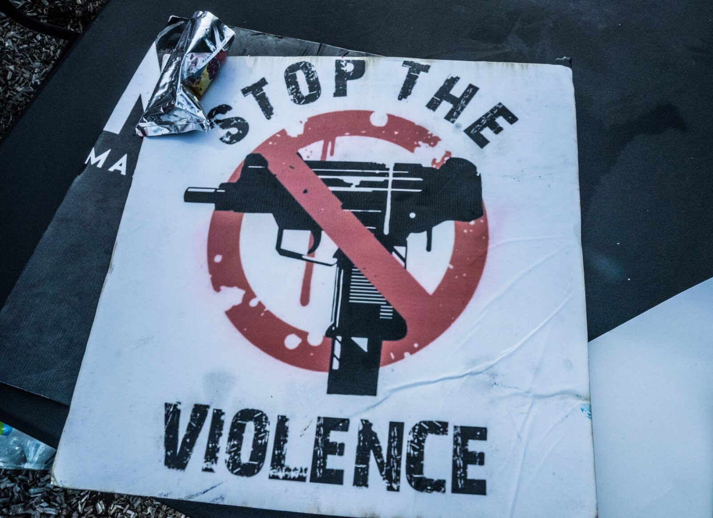
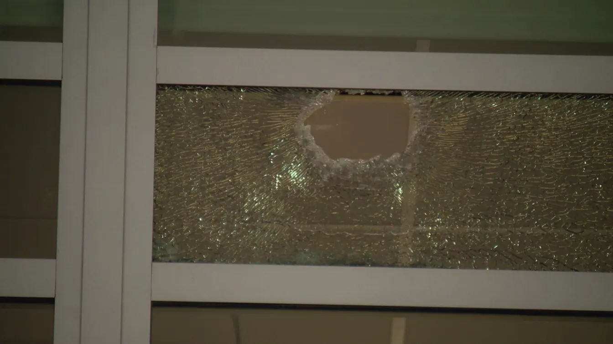
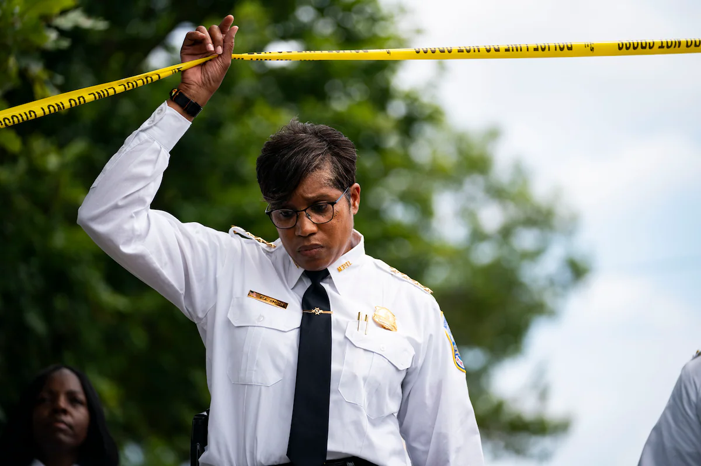
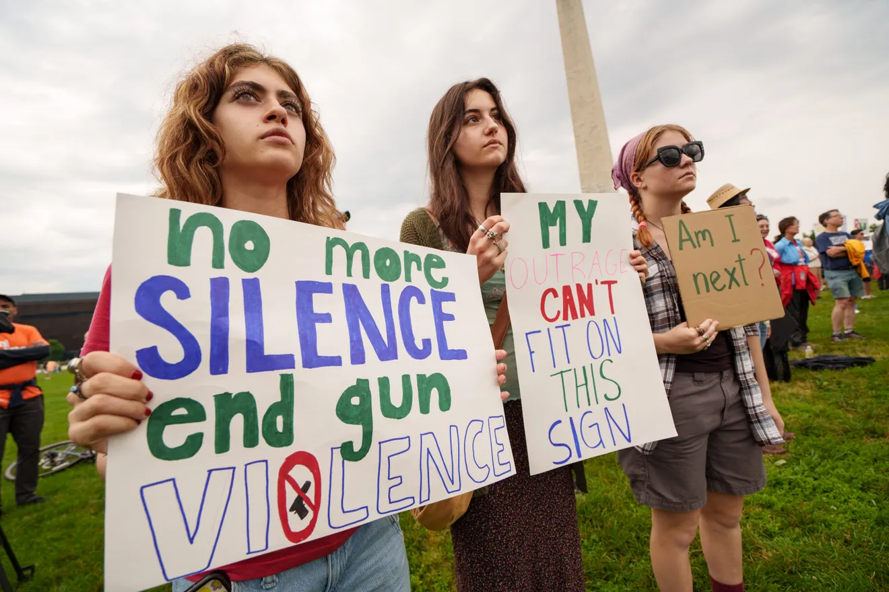

By Peter Hermann, Published: August 19, 2023 9:00 AM EDT
During the covid-19 pandemic, D.C. officials could safely say the nation’s capital was not alone in struggling to reduce deadly gun violence, as homicides spiked here just as they did in cities across the country.
But more than halfway through this year, killings in the District are surging toward numbers not seen in two decades, while homicides are dropping in dozens of other major cities, including New York, Chicago, Philadelphia and Baltimore.
But more than halfway through this year, killings in the District are surging toward numbers not seen in two decades, while homicides are dropping in dozens of other major cities, including New York, Chicago, Philadelphia and Baltimore.

A poster sits on a table at a Guns Down Friday event at Cedar Gardens (Photo by Dee Dwyer)
“Why is Washington bucking the trend?”
- Richard Rosenfeld, University of Missouri-St Louis criminologist
D.C. officials and criminologists say it is difficult to pinpoint why the city is an apparent outlier. Leaders in other big cities where homicides have dropped say they are struggling with the same problems as the nation’s capital, including smaller police forces, difficulty recruiting and retaining officers and frustrations over progressive policies or laws that they see as allowing more criminal defendants to go free. Many of the cities also have crime-fighting strategies similar to D.C.’s, with police focusing on seizing illegal firearms and targeting the places with concentrated violence.
But D.C. also has unique challenges that experts say could explain why rising crime has persisted this year. Though D.C. runs its own police department, federal authorities run almost every other part of the criminal justice system — including prosecutors, courts, prisons and offender supervision — and local and federal leaders sometimes find themselves at odds. The city has also been slow to recover from the pandemic, with relatively few returning to offices in some places, leaving parts of the downtown and other areas feeling deserted.
At a recent meeting about public safety issues in Chinatown, people described a profound change, with the hubbub of commuters and lunchgoers replaced with panhandlers. It has contributed, they said, to a feeling of lawlessness.
“The reason we are seeing homicide rates coming down is the unraveling of the conditions that brought the rates up to their highest points during the pandemic,” said Richard Rosenfeld, a criminologist at the University of Missouri-St. Louis, who studies crime patterns. “But if that unraveling has been slower in D.C., we wouldn’t expect that city to have the same declines.”
“For me, the story is, ‘Why Washington?’” Rosenfeld added. “Why is Washington bucking the trend?”

Bullets struck several windows of a D.C. kindergarten classroom in 2023 (Photo via Fox 5)
D.C. has recorded 166 homicides this year, compared with 131 at this time last year — a roughly 27 percent increase. Shootings are up 20 percent, and more juveniles have been killed so far this year than in all of 2022. In contrast, homicides are down about 24 percent in nearby Baltimore, which could end the year with under 300 killings for the first time since the riots over Freddie Gray’s death in police custody in 2015.
Of nearly 70 police departments surveyed by an organization of big city police chiefs, 48 reported reductions in homicides through the end of June, compared with the same period last year. Of the cities with increases, only four had bigger percentage spikes than D.C. Other cities with rising homicides this year include Kansas City, which is on pace for a record-breaking annual count, Cleveland and Memphis.
Nearly two-thirds of D.C.’s homicides this year were committed in Wards 7 and 8, which are situated mostly east of the Anacostia River and include some of the city’s poorest neighborhoods. But there also have been spikes elsewhere, such as Ward 1, which includes Adams Morgan and the U Street entertainment district. That ward has seen 18 killings so far this year, compared with eight at this time last year. Police say the motives for D.C.’s killings have been eclectic, ranging from crew violence to random robbery attempts to people settling petty disputes with guns.
D.C. officials and others note that even in urban areas where homicides are going down, few are on a pace to reach marks equal to or lower than 2019, the year before covid-induced lockdowns and the mass demonstrations stemming from the police killing of George Floyd in Minneapolis.
But criminologists say statistics are showing that many cities seem to be reversing the crime spikes that began in 2020, and the District appears to be lagging behind. A Washington Post database tracking crime data from 90 police departments in major metropolitan areas shows that the collective homicide rate was down about 17 percent from January to June compared with the same period in 2022, but up 15 percent from 2019.

Police Chief Pamela A. Smith (Photo via the Washington Post)
At a news conference Thursday, acting D.C. police chief Pamela A. Smith, who was promoted to the top job last month and is still awaiting confirmation from the council, blamed a proliferation of illegal firearms for the rise in violence in the city. Officials said officers have confiscated 1,809 firearms this year, outpacing 2022, including 241 in July alone.
Smith said the department has had success with an initiative to investigate and prevent robberies in hard-hit neighborhoods and has seen a 21 percent reduction in that crime over the past four weeks. Smith said detectives on those initiatives arrested 30 people and confiscated 26 illegal firearms.
Rosenfeld said the assertion that homicides are fueled by “lot of guns in the wrong hands involved in disputes over stupid stuff” is valid. But he noted that is also true in other cities, which are seeing decreases while D.C. is not.
Lindsey Appiah, the deputy mayor for public safety and justice, said at the news conference that officials “recognize that homicide is not where we want it to be” but noted that counts fluctuate year over year and no city has brought crime down to pre-pandemic levels. D.C. officials have complained that the police department is losing officers faster than they are being hired, bringing staffing to a half-century low. But D.C. is now offering city officers up to $5,000 for referring people to the department, and Smith said there are 260 applicants being screened, which she described as the “strongest pipeline” since 2019.
Thomas Abt, founding director of the Center for the Study and Practice of Violence Reduction at the University of Maryland, said falling homicide numbers in many cities indicates that a reversal of the pandemic-induced increase is underway.
But Abt said implementing effective strategies to target crime is more complicated in D.C. because of the District’s unique status as a federal enclave. Congress has final say over D.C. laws, and it recently stepped in to block the city’s revised criminal code over concerns it was too lenient, even though it was what local lawmakers had passed.
“In the District, with its hybrid local-federal structure, it can be difficult to actually implement anti-violence policies that we know work best,” Abt said. “And that’s because those policies depend heavily on collaboration.”
The U.S. attorney for D.C., Matthew M. Graves, has faced criticism for his office’s declining to prosecute 67 percent of those arrested by police officers in the last fiscal year in cases that would have been tried in D.C. Superior Court. D.C. officials have routinely criticized what they contend is a lack of accountability for repeat violent offenders fueling the violence.
In an interview, Graves said improvements are underway. When the D.C. crime lab lost accreditation in 2021, officials stopped conducting testing in many drug cases, preventing prosecution. A federal agency took over some testing in 2022, and earlier this year, Graves said the Bowser administration secured the help of an outside lab to pick up the slack.
Since then, Graves said, there has been “a steady rise in the number of drug cases we’ve been charging.”
Graves credited emergency legislation that makes it easier for judges to detain some people, including juveniles, before trial. The measure, passed by the D.C. Council after Mayor Muriel E. Bowser (D) offered a similar legislative proposal, has already helped authorities detain some criminal defendants accused of violent crime, but not of using a gun, Graves said.
Smith said of 103 juveniles arrested July 24 through Aug. 8, 31 were detained, which she described as a “good effort.”
D.C. leaders have for years struggled to articulate a single, cohesive strategy to fight crime, and some of their efforts have been troubled. An initiative known as People of Promise, which was designed to provide intensive resources to those considered most at risk of committing violence — or becoming a victim of violence themselves — faltered, as the city failed to make contact with many people in need of help.
The Office of Gun Violence Prevention, created in 2021, and the Office of Neighborhood Safety and Engagement, which oversees violence interrupters, have been without permanent leaders for months. Smith, who spent the bulk of her career with the U.S. Park Police before joining the D.C. force in May 2022, is untested as a big city police executive, and she will soon face lawmakers at confirmation hearings.
At Thursday’s news conference, D.C. leaders said that, at Bowser’s direction, every city agency was working on plans to reduce violence. Police, they said, would begin enforcing the city’s curfew in select areas. Officials also said they would be reevaluating violence prevention and intervention programs and standardizing performance metrics, and might recommend that some programs be consolidated.
Police leaders in other cities that have driven crime down described public safety strategies similar to those in D.C.
Michael LiPetri, chief of crime control strategies for the New York City Police Department, attributed the rise in homicides and other crime starting in 2020 to gangs and crews, historic feuds and an increase in guns on the streets. He said arrests for gun offenses in New York are at their highest level in 27 years.
LiPetri, who studies emerging crime trends and helps deploy resources, said his department is saturating areas where violence is known to occur with patrol officers, detectives and members of the gun squad, in addition to other city services. He said officers patrol those areas on foot during peak hours.

Protesters attend a D.C. rally against gun violence in 2022 (Photo by Josh Morgan)
The chief also said the agency is now more aggressively investigating incidents where gunshots are fired but nobody is struck. LiPetri said detectives are collecting ballistic evidence and are searching for motives. The goal, he said, is to learn why someone fired a gun and who the target was, so they can try to prevent the next shooting.
LiPetri said the violence that surged in 2020 is “still being studied by criminologists,” and he called what happened a “perfect storm” of pandemic disruptions and civil unrest — factors that are now subsiding.
In Baltimore, acting police commissioner Richard Worley said that despite being 500 officers down, homicides are for the first time in years showing declines.
Worley said his city’s “violence reduction strategy” includes identifying people most likely to commit or be victimized by violence, and meeting them, sometimes at their residences, and “offering them services to get out of the criminal game.” The strategy is one many departments have utilized over the years.
The commissioner said crime involving juveniles remains a challenge, similar to D.C., and that officers “make arrests and the individuals are put right back on the street. Then we lock them back up.”
Worley said he remains “cautiously optimistic” but noted, “We’re not to the end of the year yet.”